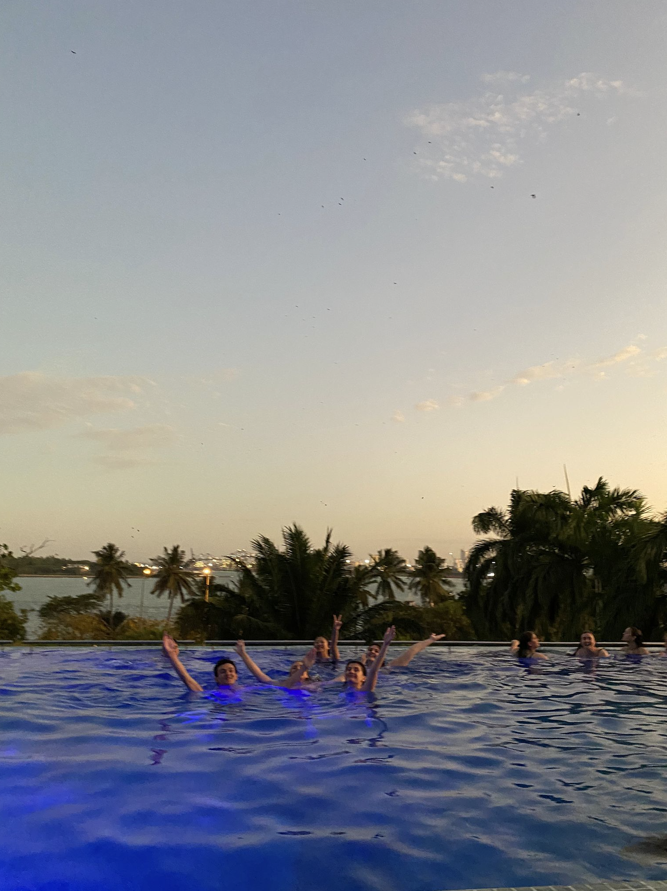
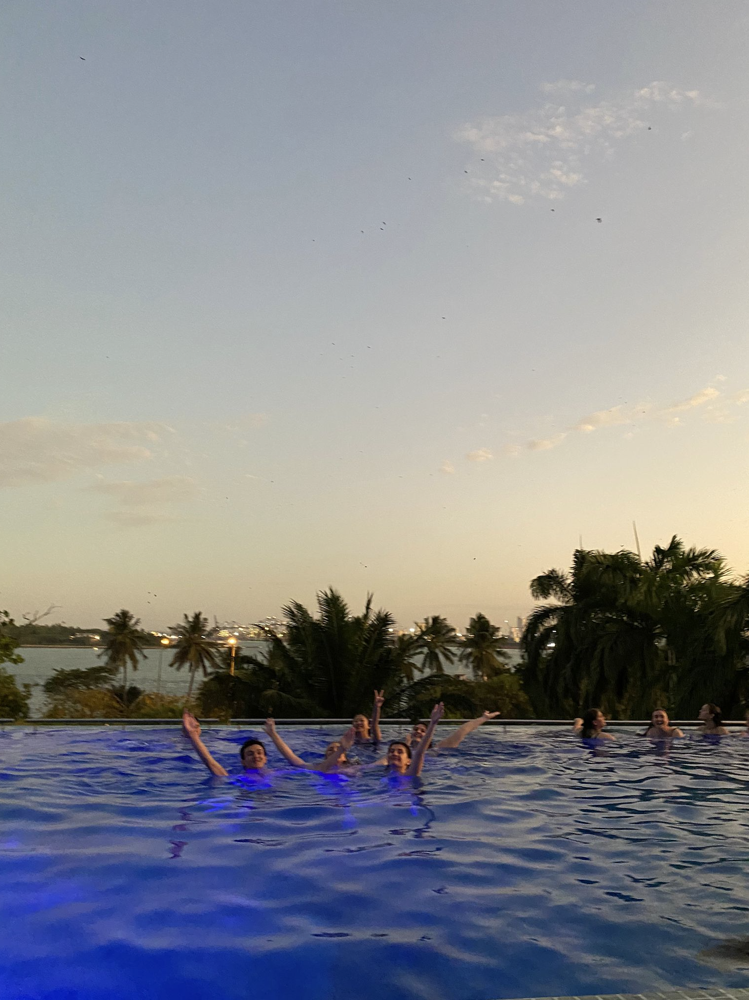
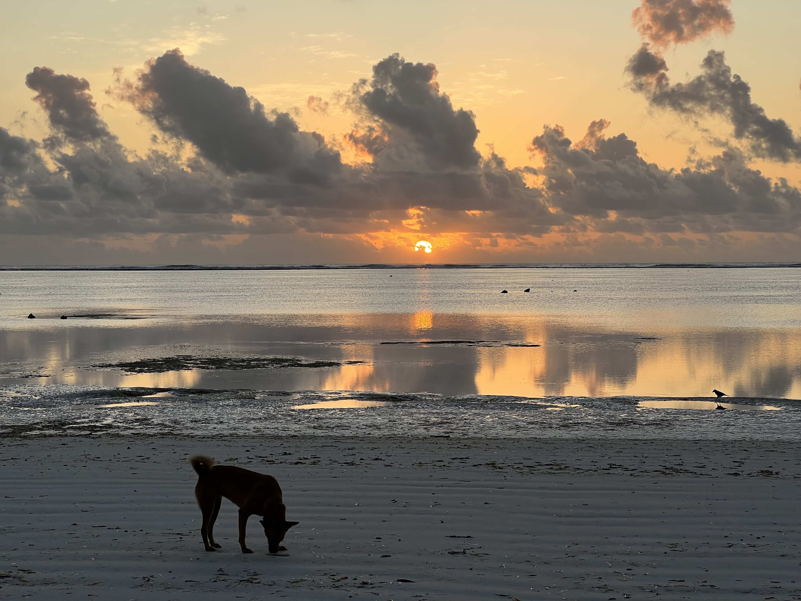
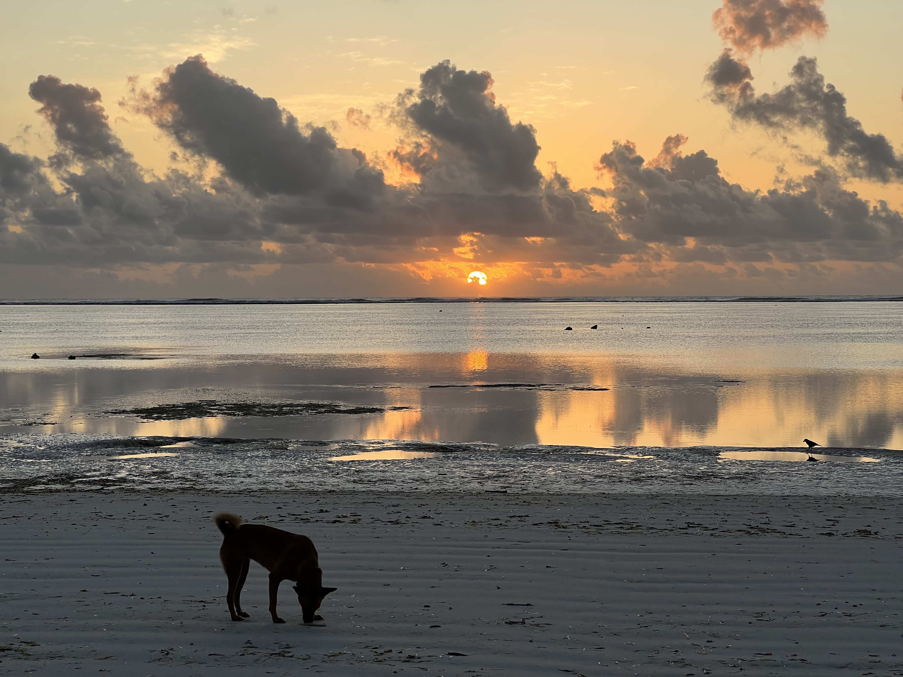

Table of Contents
Consul persius eos id. Mel no affert invidunt. Verear oblique elaboraret an vel. Nec prompta
probatus at, populo suscipit vix ne. Te sea invenire vituperatoribus, ne mel prima pericula.
Id pri assentior similique, mea an velit mazim simul. Stet ancillae qui ea, diam altera mei
in.
Id mei cibo aperiri, facete vocibus aliquando vis in. Est soleat adipisci efficiendi ad, te
cum splendide abhorreant complectitur, ne sint utroque elaboraret qui. Bonorum constituam
vim te, sed veniam conceptam id, unum equidem detracto mel ei. Duo quot detraxit scriptorem
ei. Tamquam fastidii his cu. Ei eligendi disputationi ius, ea duo elitr maluisset.
itinerary.
28 days
DAR ES SALAAM (9 NIGHTS)
means 'city of peace'.
ZANZIBAR (4 NIGHTS)
a relatively unknown tropical destination.
ARUSHA (3 NIGHTS)
A place I would stay for longer.
NATIONAL PARKS (9 NIGHTS)
Surprisingly diverse ecosystems and roaming animals.

Some Things to Do in Tanzania
Village Museum
Tanzanite Shopping
Nungwi Beach
Serengeti Game Drive
Walking Around

Dar es Salaam
Brief history + overview of Dar. Consul persius eos id. Mel no affert invidunt. Verear oblique elaboraret an vel. Nec prompta probatus at, populo suscipit vix ne. Te sea invenire vituperatoribus, ne mel prima pericula. Id pri assentior similique, mea an velit mazim simul. Stet ancillae qui ea, diam altera mei in.
After almost missing my connecting flight in Doha and 20 hours of traveling (not counting my 20 hour layover in New York) I'd finally arrived in Dar es Salaam.
After almost missing my connecting flight in Doha and 20 hours of traveling (not counting my 20 hour layover in New York) I'd finally arrived in Dar es Salaam.
The first thing I did was explore the nicest hotel I've ever stayed in. In the lobby there was a welcome table laid out with fresh coconuts, upstairs there was an infinity pool, a 24 hour gym, free sauna and steam room access, and a beautiful view of the sunset on the rooftop bar.
Immediately after, I knocked out; I was exhausted.
When I woke up, I walked around with my roommate to find some food. Neither of us were too hungry so we stopped for some street food bites. I learned my first food in Kiswahili: chapati, a flatbread. I'd be picking up vocabulary during the whole trip. Fish is samaki, goat is nguzi, chicken is kuku and my roommate and I learned what ugali was the hard way.
The next day we headed over to a restaurant for lunch and before we left we asked out professor what he recommended for vegetarians. He confidently recommended ugali, which he said was a kind of porridge; when I think of porridge, I think of soup or oatmeal. So when my roommate ordered it and a big ball of dough was brought out we were a little confused, we both assumed it would be like a dumpling, something with a filling. It had no filling. We were bamboozled. I'm sure the restaurant staff was laughing at us cutting up the ugali with a fork and knife: stupid tourists (you're supposed to use it to grab and eat your food). To note, while the vegetarians on the trip always got food they could eat, it was not always plentiful.
In short, learn some of the language before you travel to a new country. Some important terms and situations to know are several greeting phrases, please, thank you, you're welcome, basic numbers, bartering phrases, directional phrases, the name of your street, and some foods. Kiswahili is really easy to pick up since it's so phonetic and it will make your trip way better (and likely cheaper).


Part of our scheduling was a brief lecture about the history of Tanzania, a city tour, and a visit to Village Museum. I may add a history section later, after I read Ujamaa by Julius Nyerere. The Village Museum was an experience. They showed us examples of housing that different native nomadic tribes build and informed us of some (likely false) burial practices and how conflicts are resolved by consensus between parties or by elder judgment. At the end there was a traditional dance that all of the students were eventually pulled into.
The next day classes started -- it was more of a conference where different people presented their research on the impacts of climate change (in general and specifically to Tanzania), some proposed solutions, and future research projects. It was an incredibly long day sitting for hours and sometimes, since some of the research was really technical, indecipherable terms would go in one ear and out the other. Some of it was really interesting mainly, I thought, the stuff about flooding, costal resilience, and how it would affect impoverished areas.
I think enough people complained about the super long day enough, that it seemed we were sticking to the time schedule way better. Throughout the trip we visited COSTECH and the TMA (the latter of which was my favorite), had a couple more guest lecturers, and a lot of time dedicated to working on our projects.
We were split up into teams, and the goal was to have a parliamentary budget meeting, where all teams would debate the importance, and thus budgetary allowance, of their goals and needs. The teams were split up into different government sectors such as infrastructure, services, tourism, industry, and agriculture. I think the goal was a bit too lofty; not only for us to become fully knowledgable in our sectors (given the breadth of each), but also to learn realistic budget expansions and which budget to advocate cuts from (which would imply needing to know enough about the other sectors as well). Overall, I enjoyed the experience even though it was a bit inconclusive. We also sang karaoke after. We introduced the Tanzanians to some classic white people songs.
 

On our off time, we went Tanzanite shopping (which I recommend doing in Dar, it's way cheaper), shopping in general at local markets, swimming in the hotel pool, and to visit the beach and tourist towns of the northern part of Dar es Salaam (Oyster Bay, Coco Beach, and Masaki). We really liked the restaurant/bar Samaki Samaki, Fish and More. The night we went, there was karaoke, and we were going to go up to only realize that the kareoke singers were belting Celine Dion, and hitting all the notes.
To get there you have to take some kind of transportation. Taxi is the safest, but most expensive. You also have the option to take boda bodas, motocycle taxis, or tuk tuks (or bajajs), a motorized rickshaw. We mostly used the latter after learning we could cram 5 people into them for pretty cheap. You can also take dala dalas, minibuses, but we never figured out how those worked.
 

Zanzibar
Brief history + overview of Zanzibar.
So to get to Zanzibar from Dar es Salaam you can fly or take the ferry like we did. Unfortunately, I fell asleep on the ferry but it's supposedly a very pretty trip. We had a very chaotic arrival in Zanzibar since you have to go through something like immigration (even though it's a domestic trip). Afterwards, we got on buses and drove along the entire west coast of the island to arrive to our hotel.
Entering the hotel was magical, we walked through a vibrant green foliage-covered pathway and then the view opened up to a beach bungalow sitting on a beautiful sprawling white sand beach. Some daily activities were talking walks or bike rides along the beach, playing soccer with locals, and kayaking.
The magic wore off on me after a day or two: nested away started to feel more like isolated. Don't get me wrong, the hotel and location was still beautiful and I woke up every morning for the sun to rise over the water, had a yummy breakfast, and then went kayaking. But the island is pretty big, definitely not something you could walk around in a day (unlike some tour guide had previously mentioned). Pretty much the only place we could be was the hotel, and maybe its because I'm from Florida, but there's only so much you can do at the beach. It also just wasn't nearly as cheap as Dar to get around, so it's not like we could just leave ($100 for an hour taxi).

Fortunately there were some excursions included in the trip and we headed to Stone Town, which I loved and would have gotten lost in if not for the guides. It's a labyrinth of alleyways still decorated with a lot of the old Arab and Indian architecture. We spent the day walking around listening to the tour guide explaining how to notice different patterns in the historic doors. We had a bit of free time and bought some more souvenirs, but all in all Dar was the cheapest place to do so.
Later we went to Jozani Forest wandering through mangrove forests and later a jungle where we got to see some cute monkeys and huge trees. I wish the guava had been in season so we could have gotten to try some, I miss my guava tree.
Another day, we had a free day, and I could have opted to stay at the hotel, but obviously I didn't do that. We arranged a (pretty expensive) taxi to pick us up and take us to Nungwi Beach as three of us had arranged to go horseback riding in the ocean. That same day, another group had arranged to go on a spice tour (where they got to buy locally made perfume oils 😭).
While we thought the beach our hotel was on was pretty, Nungwi beach was gorgeous. The water was so blue and so clear and best of all there were people and businesses. Anyhow, my friends and I went to get our horses, we assured the lady that we had all ridden horses before (we had not), and made our way out into the water. I was pretty surprised that we were riding bareback butt we got on the horses anyway and it was pretty damn hard to balance and lead the horse in the water. At one point, I must've done something or my horse, Safari, just got spooked and it started sprinting. I squeezed my legs as hard as possible and leaned forward, and while I was scared I wasn't going to be able to stay on, that was definitely the highlight of my experience (also Safari just pooped in the water while he was walking, that was also an experience).

We hung out at the beach a little while longer, explored a little bit, and bought some souvenirs. We called the taxi back to take us to Mnarani Turtle Conservatory, a natural spring where some native turtles are kept for conservation efforts. We got in the water with turtles of all sizes and some small fish, occasionally employees would throw in some kelp for the turtles and all the turtles would swarm the area. We eventually had to leave because we had to get back to the hotel for a lecture on network theory and transportation system vulnerability to flooding. There was also an effort to do a coding demonstration but none of us had working wifi, so it didn't really work out.
All in all, it was a good day - but tragedy stuck the next. The previous night Aidan had a 103 degree fever (reportedly 106), which freaked me out a lot and I think I went to bed early. I woke up really achey, and kind of chalked it up to the horseback riding and went to breakfast. About half the group was going snorkeling that day but I decided to stay at the hotel and explore the village. I really wasn't feeling good after breakfast so I got back in bed, planning to wake up in an hour.
I did not wake up an hour later. When I woke up and it was light out, I thought I had slept until the next morning - it had been 30 minutes. Enough said that I did not get to explore the village.
I had developed an 103 degree fever and was in and out of sleep all day. I had a cooling towel with ice that I'd placed behind my neck and on my head to try around cool myself down, but my fever just wasn't breaking. There was also a covid scare going around so everyone was taking tests. I took and ibuprofen and later when that did nothing I took a Tylenol. Finally, my fever broke around 6pm and I was covid negative. Apparently all day, people were having stomach issues and I started to have some too after my fever broke. I think about half of us ended up with food poisoning and we're still not really sure from where...
The next day we had to leave. While I can't say that Zanzibar was my favorite experience of all the places we went, I think that the circumstances that I was there under, didn't lead to the best experience for me. I would definitely go back and maybe next time stay in a more populated area, like Stone Town or Nungwi, and learn how to ride the dala dalas which are the cheapest way to get around Zanzibar. Like I said, its such a big island, and I'd love to explore it some more.


Arusha + National Parks
Brief history + overview of Arusha Serengeti Tanganyca native popularions.
Off to Arusha! We took a quick plane ride and arrive at our hotel. I still wasn't feeling great so I wasn't doing much and I definitely wasn't taking pictures, so I have very few pictures of Arusha.
We were supposed to be doing our second war games here but instead of representing national sectors, teams represented different national bodies and interests: such as the IMF, the UN, Tanzanian import partners, export partners, and Tanzania. Instead of debating on budget, we debate on fair and equitable policies for development.
I think this project was way better scoped which led to better debates. The only thing was that people would get confused on what was being debated. Again this happened because if A and B are debating and A wants x and B wants y, then A also has to be knowledgable on y and how itself and vise versa. I think the Dialogue could have benefited from more general lectures, such as on various climate policy solutions (e.g. carbon tax, carbon credits, etc).


Then we left for our safaris! Since most days were the same, I don't have a lot to write about, but I do have a lot of pictures. Most days consisted of getting up pretty early, driving around the parks during the day, and going to a new hotel almost every night.


During the safaris, we'd get so close to the animals. Shout out to both my drivers Godfried and Godwin, we saw some rare twin baby elephants and got to see four of the Big 5 (unless you count hardly seeing rhinos through binoculars, then we saw all five). We went to ___, __, __ (list all of the parks). It was also peak season, so we got to see parts of the great migration.
The hotels we stayed at were so nice. They would greet us with some small welcome drink, usually iced tea or fruit juice, and they were beautifully located. Surprisingly, I never had the feeling that I had in Zanzibar, of being isolated, even though we were literally in the middle of nowhere. I think it was because we were never at the hotels for long enough for me to get antsy.
Our last assignment while we were on the trip was to read an assigned book and give a book report to the class. My book was Rethinking AI, read my thoughts here. I really enjoyed the presentations so much so that I fell back in my seat :)
How to Get Around
For all of these you want to make sure either your driver knows where you want to go or you have a map to give them directions. If you are doing the latter, know some words in Kiswahili such as left, right, straight and stop here.
Taxi
You can usually find taxis waiting outside hotels or you can have your hotel arrange a taxi for you. We did both on this trip and it was substantially cheaper when we went to just find a taxi.
Another tip is that the taxis that you find away from hotels will also be cheaper. You wont get local prices/rates but they won't be able to up-charge you based on your hotel. Also if there's a taxi driver that you has a good rate, get their WhatsApp and they might be able to come to you when you need it.
For us, a 20-30 minute taxi was about 15,000 shillings, or $8.
Tuk Tuk
This is mostly how we got around because it was cheaper and way more fun.
One night we were walking back and though we'd be able to find taxis down the road. We were walking for a while and didn't see any taxis and any tuk tuks we did see were alone and we didn't think we'd all fit. Eventually we had to ask because we had kept walking and still not seen anything. The driver said it was alright and the five of us squeezed in. Luckily the driver knew the area we wanted to get to, unfortunately I didn't know how to say stop when we got to the hotel, but I did know how to say slow "pole pole", so he slowed down enough for us just to step out and then he realized he had to stop. That was a 7,000 shilling, or $5, ride.
To find these you also need to be in a pretty busy area since they usually hang around high traffic areas. You can also flag them down. Sometimes when they're driving along the road they honk at you, and I could never figure out they were asking if you wanted a ride of if they were catcalling. I assumed the former and would just respond no.
Boda Boda (Bajajs)
Only got to ride these a couple times but they're also pretty fun. Actually I was riding one with a friend, and he didn't feel safe sitting on the back so he sat in the middle with me on the end (with the driver in front of course). Throughout our whole ride we would find locals laughing at us, I thought that was funny.
We could not figure out how to flag these down. The only time we were able to find some where in high traffic areas or hanging around gas stations.
A 10 minute drive was about 2,000 shillings, or $1, by far the cheapest transportation I took while in Tanzania.
Dala Dala
I really wish I had figure out how these worked. They're always packed like sardines, but some that I saw looked pretty cool with colorful LED lighting.
All the reading I've done says that these are so cheap. I recommend finding more information on them, but someone took a dala dala from Stone Town to the other side of Zanzibar for 2,000 shillings. If we had gotten a taxi for that distance, it would have been like $60 for 4 people. They payed one dollar, one.
The ones I saw in the city, the drivers that were collecting payment were collecting coins. The largest coin that exists is 500 shillings, I think, which is 50 cents per person.
Also "real", government-operated, buses also exist and run in major cities. I saw the bus stops, but I hardly saw a bus. Maybe because I wasn't really looking for them, but I'm not sure how often they come.
Safety
I'm a small person, and I felt perfectly safe everywhere I went while in Tanzania. I wouldn't walk around alone, but I wouldn't walk around alone in any city I'm unfamiliar with.
Its important to have common sense, know how to say 'no', or hapana, when locals approach you and offer to sell you stuff or follow you around, and also be able to ignore them in general.
I have to say I'm definitely more cynical than some others on the group, I always thought the locals were trying to scam us (its typical to follow you to your destination then ask for payment since they were "protecting" or "guiding" you). But, some people engaged more with locals that approached them and had a really good time.
For women, the men will catcall and verbally harass you but I was never physically approached (I was also never alone, I'm not sure if this would be different). I also felt safe when it was just me and my female roommate, so you don't necessarily need to be with a guy. I was proposed to a couple times on the street and told that they loved me - that was funny. Most of it is pretty harmless, you just need to tune it out.
What to Bring
I was there for a month and all my stuff fit into a cary-on and a backpack. I really can't think of anything that I was missing, or at least nothing obvious. Oh, actually, a clothing line and a small zipped purse/bad would have been nice.
In terms of clothes, a lot that I'd read said that since the areas I was traveling to were religious you should dress conservatively. I don't own a lot of conservative and really it wasn't that important. Yes, was I catcalled on the street, but that would have happened regardless of what I was wearing, especially since I'm obviously a foreigner (read: white).
Here's everything that I packed:
Clothes
- Wide leg pants
- Midi skirt, with slit
- Linen shorts
- Leggings
- 2 halter tops
- White button up
- Olive button up
- Olive bralette
- Graphic tee
- Basic tank
- Maxi dress, with slit
- Sweatshirt
- Bathing suits
First Aid
- 100% Deet spray
- Eucalyptus balm (for face)
- Stool softener
- Anti-diarrhea pills
- Misc band-aids
- Blister tape
- Ibuprofen/Tylenol
- Tiger Balm
- Anti-acids
- Malaria pills
Toiletries
- Toothbrush
- Toothpaste
- Hair brush
- A couple pads
- Razor
- Shampoo/Conditioner bars
- Hair oil
Makeup
- Concealer
- Cream blush
- Cream contour
- Mascara
- Eyeshadow
Accessories
- Lightweight scarf
- Tote bag
- Small backpack
- Cooling towel
Skincare
- Sunscreen stick
- Facewash
- Serum
- Moisturizer
Misc
- Battery pack
- Universal outlet adapter
- Camera
- Sheet detergent
Shoes
- Sneakers
- Sandals
More Things to Do
I'm a big researcher when I travel, I don't really like being idle. I usually make itineraries, but that was kind of impossible on this trip since we hardly followed our class itinerary... It was more of a go with the flow trip. Anyway, here's my research of all the cool places to go.
About Me!
Jambo! My name is Nicole and am currently a student at Northeastern University.
I just got back from my Dialogue of Civilizations in Tanzania and had a great time.
This project was completed in
HTML/CSS you can look at the source code here. I'd love to
know what you think of it or if you have any recommendations on how to make the site better. Feel free to
email me.